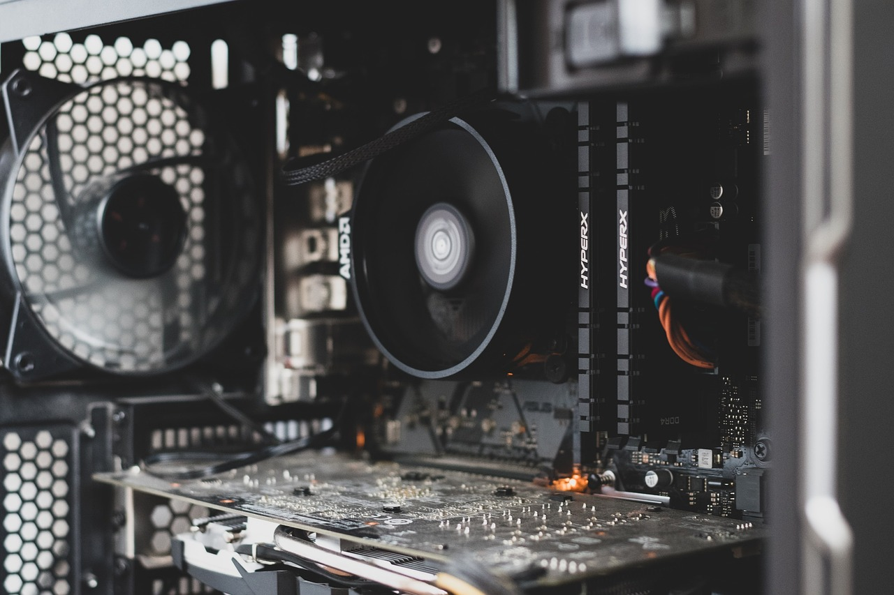

삼성, 미스트랄AI 지분 투자…유럽 AI 반도체 파운드리 수주 선점

삼성전자는 2026년 9월 한불 정상회담을 계기로 미스트랄AI에 전략적 투자를 확정했다. 미스트랄AI는 2023년 설립된 프랑스 AI 스타트업으로, 오픈소스 LLM '미스트랄 7B'와 엔터프라이즈 모델 '르샤(Le Chat)'를 보유하고 있다. 2025년 시리즈B 기준 기업가치 60억 달러로 유럽 최대 AI 기업 중 하나로 부상했으며, 연간 매출은 2024년 3억 유로를 돌파했다.
삼성전자의 미스트랄AI 투자는 단순 재무 투자가 아니라 커스텀 AI 반도체 공동 개발을 포함한 전략적 파트너십이다. 미스트랄AI는 추론 최적화 AI칩 설계를 추진 중이며, 삼성 파운드리(SF3E 공정)에서의 시범 생산을 협의 중인 것으로 알려졌다. TSMC N3에 비해 SF3E는 가격 경쟁력에서 15~20% 우위를 가진다는 점이 협상 레버리지다.
한불 정상회담에서는 반도체·AI 외에 방산(K9 자주포 프랑스 수출 협력), SMR(소형모듈원전) 기술 협력, 우주산업 공동 개발이 포함된 '전략산업 동맹' 선언이 나왔다. AI·반도체 분야에서는 2030년까지 한불 공동 AI 연구센터 설립과 반도체 소재 공동 구매 협약이 의제로 포함됐다. 프랑스는 EU AI법(AI Act) 시행 이후 유럽 내 AI 인프라 구축에 연간 100억 유로 이상을 투자하는 최대 수요국이다.
유럽 AI 반도체 시장은 2025년 기준 연간 180억 달러 규모이며, 엔비디아가 약 78%를 점유하고 있다. 삼성전자 파운드리의 유럽 AI 고객사 비중은 현재 전체 수주의 3% 미만이나, 미스트랄AI와의 협력이 성사되면 유럽 팹리스 고객 확보의 레퍼런스가 된다. 인텔 파운드리의 유럽 공략 실패(2025년 독일 공장 착공 지연) 이후 삼성이 유일한 비미국 파운드리 대안으로 부상했다.
삼성의 미스트랄AI 투자는 파운드리 수주 가뭄 속에서 '고객 직접 발굴'이라는 새로운 전략의 첫 실행 사례다. 기존 파운드리 비즈니스는 설계사(팹리스)가 먼저 설계하고 제조를 의뢰하는 구조였지만, 삼성은 AI 기업에 지분 투자를 하고 커스텀칩 설계부터 공동 참여해 파운드리 물량을 선점하는 '투자-수주 연계' 모델을 실험하고 있다. 이 모델이 성공하면 퀄컴·엔비디아 의존 탈피의 현실적 경로가 된다.
유럽 AI 인프라 투자의 수요처 다변화가 한국 파운드리에 기회를 열고 있다. EU AI법 시행 이후 유럽 기업들은 미국산 AI 인프라 의존도를 줄이려는 '디지털 주권' 논의를 본격화했으며, 미국 외 파운드리 공급처 발굴이 실제 구매 전략으로 구체화되고 있다. 삼성 파운드리가 '비미국 대안'의 대표 주자로 포지셔닝 될 수 있는 드문 시간이 지금이다.
그러나 단기 수주 전환 가능성은 제한적이다. 미스트랄AI의 추론칩 프로젝트가 샘플 생산 단계에 진입하려면 최소 18~24개월이 필요하고, 양산 수주로 이어지려면 2029년 이전이 어렵다. 삼성 파운드리의 SF3E 수율이 현재 TSMC N3 대비 낮다는 업계 평가가 지속되는 한, 유럽 팹리스의 양산 전환에는 추가 검증 기간이 불가피하다.
삼성전자 파운드리 부문은 유럽 AI 고객 확보의 레퍼런스를 확보한다는 점에서 중장기 수혜주다. 미스트랄AI 협력이 성공하면 독일·네덜란드 AI 반도체 스타트업 수주 확대로 이어질 수 있다. 삼성 파운드리의 유럽 매출 비중이 현 3%에서 2030년 10% 이상으로 확대되면 연간 수주 규모는 약 2조 원 이상 증가한다.
한국 반도체 소재 기업 중 포토레지스트(PR)와 CMP 슬러리를 삼성 파운드리에 공급하는 동진쎄미켐·솔브레인은 삼성 파운드리 수주 증가의 간접 수혜자가 된다. 특히 SF3E 공정 확대 시 고품위 EUV 포토레지스트 수요가 증가하며, 동진쎄미켐은 이미 삼성 파운드리에 EUV PR을 독점 공급하고 있다.
TSMC는 유럽 팹리스의 대안 파운드리 탐색이 본격화될수록 유럽 시장 지배력이 점진적으로 약화된다. 현재 TSMC의 유럽 AI 파운드리 시장 점유율은 약 65%인데, EU 디지털 주권 정책이 강화되면 5~10%p 이탈 가능성이 있다. 단, TSMC 드레스덴 공장(2027년 가동 예정)이 완공되면 '유럽 내 생산'을 앞세워 방어에 나설 수 있다.
인텔 파운드리는 독일 마그데부르크 공장 착공 지연(당초 2025년 착공→2026년으로 연기)으로 유럽 AI 반도체 수요 선점 기회를 이미 놓쳤다. 미스트랄AI 같은 유럽 AI 기업들이 삼성 파운드리로 기울면 인텔의 유럽 팹리스 고객 확보 전략에 차질이 생긴다.
반도체 투자자는 삼성전자 파운드리의 유럽 수주 진행 상황을 SF3E 공정 가동률로 추적해야 한다. 현재 SF3E 가동률이 50% 미만으로 추정되는 상황에서 미스트랄AI와의 협력이 실제 테이프아웃으로 이어지는 시점이 파운드리 실적 개선의 선행 지표다.
기업 전략 담당자는 유럽 AI 기업과의 협력에서 '한불 전략산업 동맹'을 외교적 레버리지로 활용할 수 있다. 특히 EU AI법 적격 공급망 요건을 충족하는 한국산 반도체·소재는 유럽 조달에서 미국산 대비 규제 리스크가 낮다는 점을 영업 포인트로 삼을 수 있다.
실제 조달 현장에서는 — 유럽 AI 기업들이 파운드리 벤더 발굴 시 단순 가격보다 '공급망 지속 가능성 인증'을 먼저 묻기 시작했다. EU 공급망 실사법(CSDDD) 적용으로 제조 공정의 탄소 배출, 원재료 윤리 조달 증명이 계약 선결 조건이 되고 있다. 삼성 파운드리가 유럽 수주를 실제로 가져오려면 공정 기술 경쟁력과 함께 ESG 조달 증빙 체계를 유럽 기준에 맞게 갖추는 것이 기술 영업만큼 중요하다.
이 포스팅은 쿠팡 파트너스 활동의 일환으로 수수료를 제공받습니다.